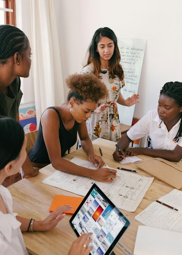

Een mythe schrijven
Bij het woord mythe denken de meeste mensen direct aan de oude Grieken. Maar mythologie is veel breder dan dat. Denk bijvoorbeeld aan ‘The Matrix’, een mythe over de moderne maatschappij, waar technologie een grote rol in speelt. Of wat dacht je van levende legendes, zoals Wim Hoff, die bijna bovenmenselijke prestaties kan leveren?
Tijdens deze workshop gaan we op zoek naar onze eigen helden en symbolen. Hoe creëer je een ongenaakbare held? Wat ís een held? We bespreken deze vragen aan de hand van enkele voorbeelden, waarna we met zijn allen gaan brainstormen over de mythologie van jouw bedrijf, vriendengroep of familie.
Vervolgens worden de deelnemers ingedeeld in kleine groepjes en houden we een wedstrijd. Wie kan de meest overtuigende mythe bedenken?
Duur:
3 uur
Benodigdheden:
Pen en papier verzorg ik, maar als je liever typt, moet je je eigen laptop of tablet meenemen.
Kosten:
1-10 deelnemers: 600 euro
11-25 deelnemers: 700 euro
26 of meer deelnemers: op aanvraag
Reiskosten (retour vanuit Utrecht)
10-100 km: 50 Euro
100-150 km: 100 Euro
150+ km: op aanvraag
Inschrijven 